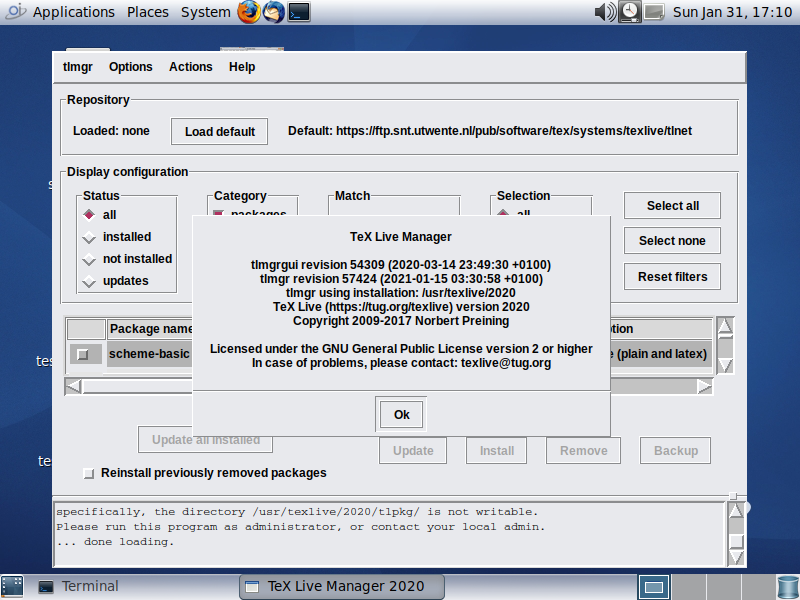

Hipster Handbook - TeX Live Typesetting Software
The following notes document the steps to install TeX Live on OpenIndiana Hipster and how to update it using the tlmgr TeX Live package management tool.
To test a virtual machine running TeXLive on OpenIndiana, you can also run the texlive2021 example Vagrantfiles in the vagrantfiles repository :
# git clone https://github.com/openindiana/vagrantfiles
TeX Live tlmgr Management Tool
The TeX Live Management Tool has both a command line interface and a GUI. The GUI (tlmgr gui) uses Perl Tk and works on OpenIndiana. The following screenshot illustrates tlmgr and the Opendiana MATE desktop :

TeX Live Cross Platform Installer
See the full TeX Live guide at http://tug.org/texlive for detailed information.
Download the TeX Live Cross Platform Installer from http://mirror.ctan.org/systems/texlive/tlnet/install-tl-unx.tar.gz.
There is a script in this package, called install-tl. The goal is to install TeX Live using the cross platform installer as follows :
# install-tl
Before doing so, create a special BE (Boot Environment) if you plan to install TeX Live as root (installing as non-root user is recommended by TeX Live).
# beadm create -a texlive
Alternatively create a snapshot of the BE to have a possibility to rollback.
The install-tl script installs a utility called tlmgr, the package management utility for TeX Live and, in principle, tlmgr is able to remove (uninstall) a TeX Live installation:
# tlmgr remove --all
If you answer yes here the whole TeX Live installation here,
under /usr/texlive/2020, will be removed!
Remove TeX Live (y/N): y
Ok, removing the whole installation:
A snapshot of the old BE or a special BE for TeX Live, allows one to rollback to the situation before install without having to use tlmgr to uninstall.
After rebooting into a new BE, run the perl installer script :
# install-tl --help
If you wish to use the TeX Live GUI, install the OpenIndiana Perl Tk package (the tk-perl IPS package is available on OpenIndiana release 2022 or higher) :
# pkg install -v tk-perl
Then run the TeX Live installer GUI as follows :
# install-tl --gui
The next section discusses the interactive mode of the install-tl script.
TeX Live Cross Platform Installer Main Menus
The cross platform installer version 57337 of install-tl detects OpenIndiana as Solaris on Intel :
./install-tl --version
install-tl (TeX Live Cross Platform Installer) revision 57337
TeX Live (https://tug.org/texlive) version 2020
The command to detect the platform is:
./install-tl --print-arch
i386-solaris
The main menus in interactive mode are :
./install-tl
Loading http://ctan.cs.uu.nl/systems/texlive/tlnet/tlpkg/texlive.tlpdb
Installing TeX Live 2020 from: http://ctan.cs.uu.nl/systems/texlive/tlnet (verified)
Platform: i386-solaris => 'Solaris on Intel x86'
Distribution: net (downloading)
Using URL: http://ctan.cs.uu.nl/systems/texlive/tlnet
Directory for temporary files: /tmp/eCcsGDKJWY
======================> TeX Live installation procedure <=====================
======> Letters/digits in <angle brackets> indicate <=======
======> menu items for actions or customizations <=======
Detected platform: Solaris on Intel x86
<B> set binary platforms: 1 out of 16
<S> set installation scheme: scheme-full
<C> set installation collections:
40 collections out of 41, disk space required: 7130 MB
<D> set directories:
TEXDIR (the main TeX directory):
!! default location: /usr/local/texlive/2020
<O> options:
[ ] use letter size instead of A4 by default
[X] allow execution of restricted list of programs via \write18
[X] create all format files
[X] install macro/font doc tree
[X] install macro/font source tree
[ ] create symlinks to standard directories
<V> set up for portable installation
Actions:
<I> start installation to hard disk
<P> save installation profile to 'texlive.profile' and exit
<H> help
<Q> quit
Enter command:
To add the 64bit executables go into menu "B" :
===============================================================================
Available platforms:
a [ ] Cygwin on Intel x86 (i386-cygwin)
b [ ] Cygwin on x86_64 (x86_64-cygwin)
c [ ] MacOSX current (10.13-) on x86_64 (x86_64-darwin)
d [ ] MacOSX legacy (10.6-) on x86_64 (x86_64-darwinlegacy)
e [ ] FreeBSD on x86_64 (amd64-freebsd)
f [ ] FreeBSD on Intel x86 (i386-freebsd)
g [ ] GNU/Linux on ARM64 (aarch64-linux)
h [ ] GNU/Linux on ARMv6/RPi (armhf-linux)
i [ ] GNU/Linux on Intel x86 (i386-linux)
j [ ] GNU/Linux on x86_64 (x86_64-linux)
k [ ] GNU/Linux on x86_64 with musl (x86_64-linuxmusl)
l [ ] NetBSD on x86_64 (amd64-netbsd)
m [ ] NetBSD on Intel x86 (i386-netbsd)
o [X] Solaris on Intel x86 (i386-solaris)
p [ ] Solaris on x86_64 (x86_64-solaris)
s [ ] Windows (win32)
Select "p" to add Solaris on x86_64 for the TeX Live binaries for that architecture.
TeX Live works with "schemes"; the basic scheme (TeX and latex) requires about 270 MB of space :
===============================================================================
Select scheme:
a [ ] full scheme (everything)
b [ ] medium scheme (small + more packages and languages)
c [ ] small scheme (basic + xetex, metapost, a few languages)
d [X] basic scheme (plain and latex)
e [ ] minimal scheme (plain only)
f [ ] ConTeXt scheme
g [ ] GUST TeX Live scheme
h [ ] infrastructure-only scheme (no TeX at all)
i [ ] teTeX scheme (more than medium, but nowhere near full)
j [ ] custom selection of collections
Actions: (disk space required: 270 MB)
<R> return to main menu
<Q> quit
The default installation is going to /usr/local/texlive/2020, but in the Directories menu this can be changed :
Directories customization:
<1> TEXDIR: /usr/texlive/2020
main tree: /usr/texlive/2020/texmf-dist
<2> TEXMFLOCAL: /usr/texlive/texmf-local
<3> TEXMFSYSVAR: /usr/texlive/2020/texmf-var
<4> TEXMFSYSCONFIG: /usr/texlive/2020/texmf-config
<5> TEXMFVAR: ~/.texlive2020/texmf-var
<6> TEXMFCONFIG: ~/.texlive2020/texmf-config
<7> TEXMFHOME: ~/texmf
The installer can also create symbolic links such as /usr/bin/tex to the /usr/texlive/2020 binaries, as can be set in the Options menu :
===============================================================================
Options customization:
<P> use letter size instead of A4 by default: [ ]
<E> execution of restricted list of programs: [X]
<F> create all format files: [X]
<D> install font/macro doc tree: [X]
<S> install font/macro source tree: [X]
<L> create symlinks in standard directories: [X]
binaries to: /usr/bin
manpages to: /usr/share/man
info to: /usr/share/info
TeX Live Package Manager Queries
After installation of TeX Live, it is possible to make queries on what is exactly installed :
# tlmgr info schemes
i scheme-basic: basic scheme (plain and latex)
scheme-context: ConTeXt scheme
scheme-full: full scheme (everything)
scheme-gust: GUST TeX Live scheme
i scheme-infraonly: infrastructure-only scheme (no TeX at all)
scheme-medium: medium scheme (small + more packages and languages)
i scheme-minimal: minimal scheme (plain only)
scheme-small: small scheme (basic + xetex, metapost, a few languages)
scheme-tetex: teTeX scheme (more than medium, but nowhere near full)
The above output shows that scheme-minimal, scheme-infraonly and scheme-basic were installed.
New updates can be retrieved from the repository. Unless a special repository was used during installation (with the --repository switch for install-tl), the output of the default package repository can be something like :
# tlmgr option repository
Default package repository (repository): http://ctan.cs.uu.nl/systems/texlive/tlnet
Information on specific packages can be obtained with tlmgr :
# tlmgr info babel
package: babel
category: Package
shortdesc: Multilingual support for Plain TeX or LaTeX
longdesc: This package manages culturally-determined typographical (and other) rules for a wide range of languages. A document may select a single language to be supported, or it may select several, in which case the document may switch from one language to another in a variety of ways. Babel uses contributed configuration files that provide the detail of what has to be done for each language. Included is also a set of ini files for about 200 languages. Many language styles work with pdfLaTeX, as well as with XeLaTeX and LuaLaTeX, out of the box. A few even work with plain formats.
installed: Yes
revision: 57530
sizes: src: 1469k, doc: 809k, run: 3729k
relocatable: No
cat-version: 3.53
cat-license: lppl1.3
cat-topics: multilingual
cat-related: polyglossia
cat-contact-repository: https://github.com/latex3/babel
cat-contact-bugs: https://github.com/latex3/babel/issues
collection: collection-latex
TeX Live Updating
Suppose that you have installed a version of TeX Live from a specific date :
# ./install-tl --repository https://texlive.info/tlnet-archive/2020/12/28/tlnet/
After installation, you have TeX Live from December 28, 2020.
It is possible then to change the repository and update to the latest version.
# tlmgr option repository https://texlive.info/tlnet-archive/2021/01/28/tlnet
tlmgr: setting default package repository to https://texlive.info/tlnet-archive/2021/01/28/tlnet
tlmgr: updating /usr/texlive/2020/tlpkg/texlive.tlpdb
To update the packages of TeX Live to the default repository :
# tlmgr update --all
The TeX Live package management tool has its own mechanism of making backups:
/usr/texlive/2020/tlpkg/backups
Removing TeX Live
In principle, tlmgr is able to remove (uninstall) a TeX Live installation:
# tlmgr remove --all
If you answer yes here the whole TeX Live installation here,
under /usr/texlive/2020, will be removed!
Remove TeX Live (y/N): y
Ok, removing the whole installation:
If you have made a BE (boot environment) from before the TeX Live installation you can also rollback to an older BE as an alternative to uninstalling the software with tlmgr.